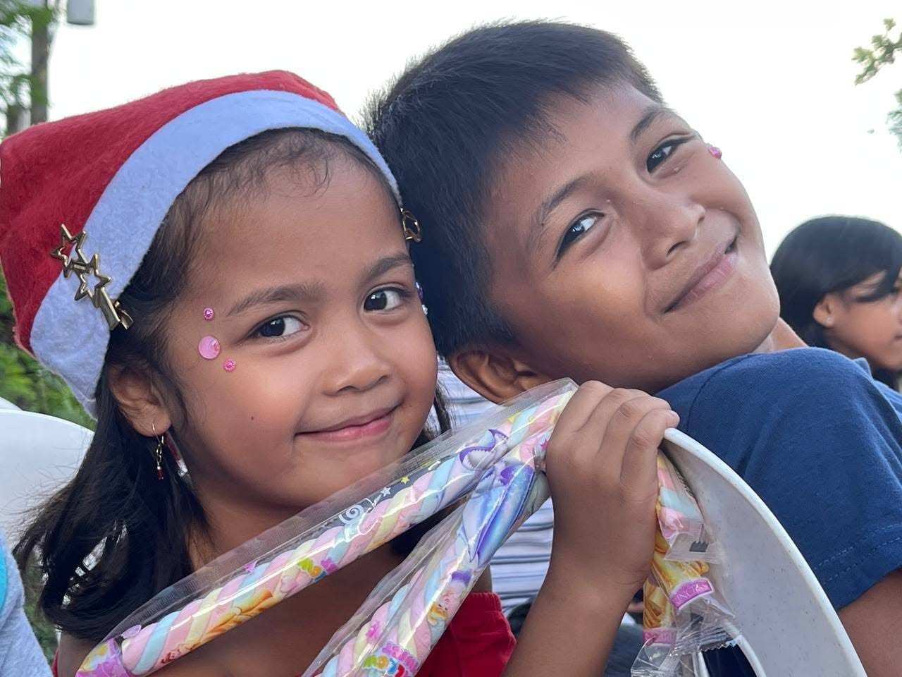
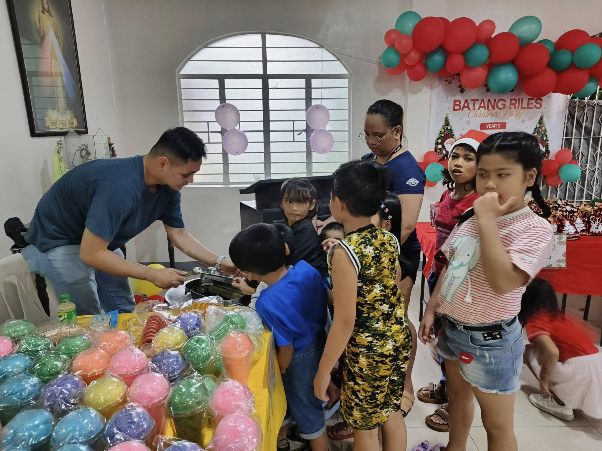
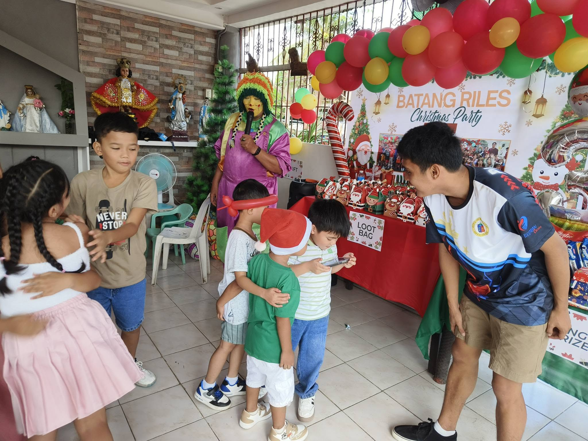

Batang Riles Christmas Party
“Every Light Has a Story.”
For three years along the tracks, we have shared memories, kindness, and hope. This Christmas, let us keep that light shining.
How simple donations created Christmas magic.
It all started along the railroad tracks with small gifts from kind-hearted strangers and friends. With whatever help came in, we bought warm meals, small toys, and holiday treats so the children living right beside the rails could have their very own Christmas celebration.
What could have been an ordinary day turned into an afternoon filled with parlor games, shared laughter, and warmth. Seeing their faces light up proved that even the humblest kindness can illuminate an entire community.
“Seeing their eyes light up beside the rails proved that even the humblest kindness can illuminate an entire community.”

Our first gathering along the Batang Riles.
More hearts, more laughter along the rails.
Because people saw the joy from our first party, more donations poured in. What began as a humble meal grew into a true Christmas party—complete with gift packages, fun parlor games, and Noche Buena groceries for the families living along the tracks.
Volunteers gathered early along the tracks, wrapping gifts and setting up holiday surprises. The community united, proving that when kindness takes root, it multiplies year after year.
“Every single donation turned directly into children's laughter right beside the tracks.”

Live Moments: Year 2 Celebration Along the Tracks
Three years of making Christmas unforgettable.
By our third year, the Batang Riles Christmas party had become a beloved annual tradition. With festive balloons, parlor games, and generous packages, we celebrated together right beside the railroad tracks.
The children we met on day one are growing up right before our eyes. Returning each December is our heartfelt promise: no matter how tough life along the tracks can get, they are loved, remembered, and never forgotten.
“Three years of shared kindness, heartfelt memories, and pure childhood happiness.”

Year 3 — Holiday parlor games with the children.
Be the Reason a Child Smiles This Christmas
This coming Christmas, we return to the tracks for our fourth year. 100% of your generous gift directly funds warm holiday meals, toy gift packs, fun parlor games, and Noche Buena grocery bundles for the children and families living along the Batang Riles.
Your kindness brings comfort and warmth to families who look forward to this special day all year long. Join hands with us to keep this beacon of light shining along the tracks.
“No act of kindness is ever too small to light up a dark railway.”